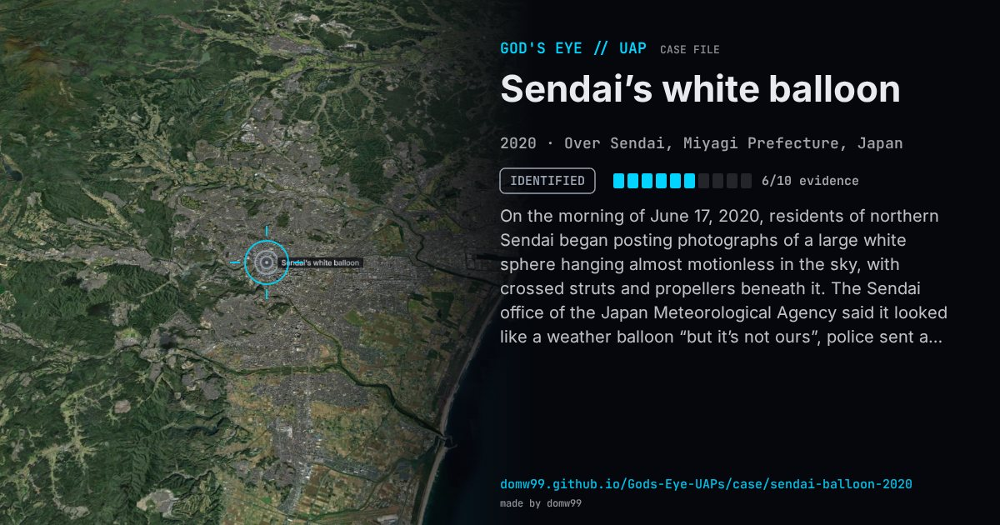

Sendai’s white balloon

On the morning of June 17, 2020, residents of northern Sendai began posting photographs of a large white sphere hanging almost motionless in the sky, with crossed struts and propellers beneath it. The Sendai office of the Japan Meteorological Agency said it looked like a weather balloon “but it’s not ours”, police sent a helicopter but could not identify it, Kyushu University denied it was theirs, and the government said only that it was aware of the object, which later drifted out over the Pacific. In February 2023, after the Chinese balloon crossed the United States, Japan’s Ministry of Defense re-examined the Sendai balloon and similar ones over Kagoshima in 2019 and Aomori in 2021, and concluded that they were strongly presumed to be Chinese unmanned reconnaissance balloons. It protested to Beijing, which said Japan had no proof.
Explanation
A balloon. On February 14, 2023, after the Chinese balloon was shot down over the United States, Japan’s Ministry of Defense said that the balloons seen over its territory in November 2019, June 2020 and September 2021 were “strongly presumed” to be unmanned reconnaissance balloons flown by China; China rejected the claim.
What was seen
Shape: A large white sphere with crossed struts and propellers hanging beneath
Witnesses: Residents of Sendai and Miyagi; the Sendai City Observatory photographed it
Duration: Most of a day
Sources
- Ministry of Defense of Japan — notice of February 14, 2023 on the balloons (in Japanese)
- The Aviationist — Japan says it strongly presumes China sent three spy balloons into its airspace (2023)
- Inquirer / AFP — Mysterious “UFO” captures imaginations in Japan (2020)
Browse
- Japan
- 2020s
- Identified
- Photo and video cases
- Official government documents
- Many independent witnesses
- Photographs
- Video footage
- Spheres and orbs